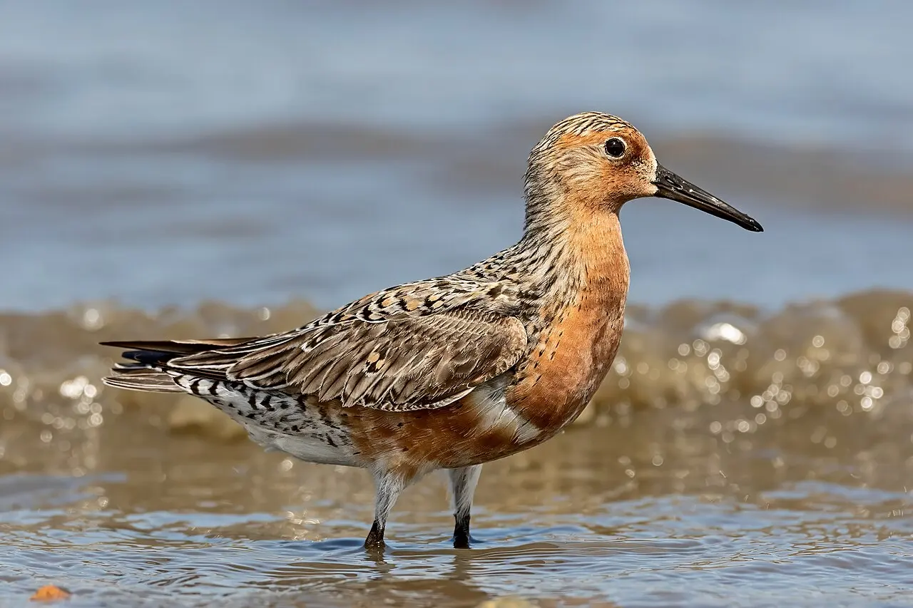
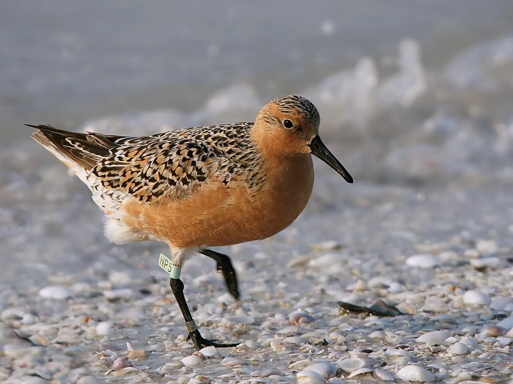

Módulo 3 Aula 15
Migração e navegação
Algumas aves cruzam continentes duas vezes por ano. O maçarico-de-papo-vermelho faz uma das maiores viagens conhecidas, e o Brasil é parada obrigatória.
- Como é a rota do maçarico-de-papo-vermelho
- Por que o litoral brasileiro importa para aves migratórias
- Que pistas as aves usam para achar o caminho

Ave da aula
Maçarico-de-papo-vermelho Calidris canutus rufa
A rota do maçarico
A subespécie rufa do maçarico-de-papo-vermelho se reproduz no Ártico canadense e passa o resto do ano em costas do sul dos Estados Unidos, do norte do Brasil e do extremo sul da América do Sul, principalmente na Terra do Fogo[1]. Muitos indivíduos voam cerca de 19 mil milhas por ano entre as áreas de reprodução e de invernada[1], algo em torno de 30 mil quilômetros. Acompanhe a viagem no mapa ou escolha um ponto da rota.
Escolha um ponto da rota.
Rota esquemática. As linhas são só uma ideia do caminho; as aves seguem a costa e fazem paradas.
O Brasil na rota
O Brasil aparece duas vezes na viagem. Ao norte, o litoral do Maranhão recebe grupos que passam o inverno na região[3]. Ao sul, a Lagoa do Peixe, no Rio Grande do Sul, é uma parada para engordar antes da viagem para o norte. Um estudo com transmissores por satélite acompanhou aves que saíram de lá: uma delas voou 8.300 km sem parar, da Lagoa do Peixe até a baía de Delaware, nos Estados Unidos; outras fizeram trechos de 1.600 a 3.600 km entre paradas, onde ficaram de 4 a 18 dias[4].

Como acham o caminho
Acertar a direção (orientação) e saber onde está (navegação) são coisas diferentes. Para a orientação, as aves usam pistas do céu e da Terra[5].
Sol
Como os marinheiros antigos, aves migratórias usam o sol para saber a direção[5].
Estrelas
Até a década de 1960, cientistas achavam que as aves tinham um conhecimento inato das estrelas, como um mapa. Depois se mostrou que elas percebem a rotação do céu e usam isso para achar o norte e o sul, o que é útil para quem migra à noite[5].
Palavras novas
Teste rápido
Sem nota. Se errar, tente de novo.
Onde o maçarico-de-papo-vermelho se reproduz?
Por que a Lagoa do Peixe é importante para a espécie?
Que pistas as aves migratórias usam para se orientar?
Referências e leitura complementar
Onde conferir o que foi dito nesta aula. Os números entre colchetes no texto levam a estas fontes. Os links abrem em outra aba.
- Red knotSmithsonian's National Zoo and Conservation Biology Institute · inglêsO maçarico-de-papo-vermelho e sua migração.
- Rufa Red Knot (Calidris canutus rufa)U.S. Fish & Wildlife Service · inglêsRota e ameaças da subespécie que passa pelo Brasil.
- Calidris canutus rufaAnimal Diversity Web · Universidade de Michigan · inglêsFicha da subespécie: áreas de reprodução e de invernada.
- Northward migration of Red Knots Calidris canutus rufa and environment connectivity of southern Brazil to CanadaBird Conservation International · inglês · leitura complementarArtigo científico sobre a parada do maçarico na Lagoa do Peixe, no Sul do Brasil.
- Navigation: How Birds Find Their Way When They MigrateAll About Birds · Cornell Lab of Ornithology · inglêsSol, estrelas e campo magnético na orientação das aves migratórias.
- Calibration of the magnetic compass of a migratory bird by celestial rotationNature · inglês · leitura complementarEstudo científico sobre a bússola magnética de uma ave migratória.
Os endereços foram abertos e conferidos em 29/09/2026. Alguns sites de revistas científicas e de órgãos oficiais exigem verificação humana e não puderam ser testados por robô. Sites externos podem mudar ou sair do ar.
Para levar
Em três frases
- O maçarico-de-papo-vermelho se reproduz no Ártico canadense e passa o resto do ano em costas da América do Norte, do Brasil e do extremo sul.
- No caminho, ele para em poucos lugares-chave, como a baía de Delaware e a Lagoa do Peixe, no Rio Grande do Sul, para reabastecer.
- As aves se orientam pelo sol, pelas estrelas e pelo campo magnético da Terra.